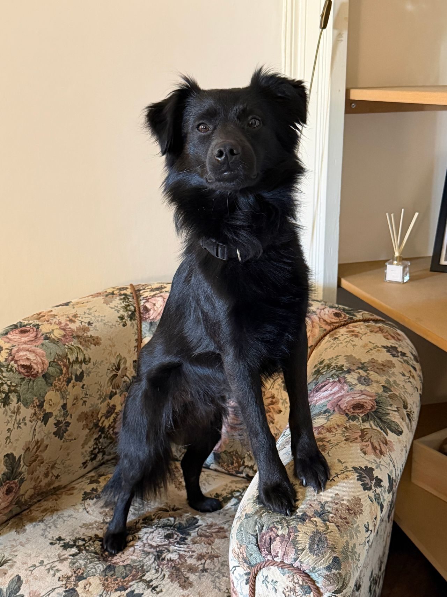
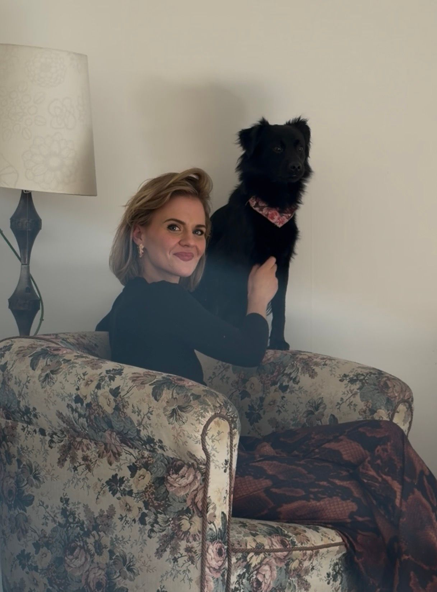

Przestrzeń, w której możesz odetchnąć
i uporządkować myśli
Gabinet psychologiczny Anny Bagrowskiej w Poznaniu. Indywidualne konsultacje dla dorosłych — w atmosferze spokoju, dyskrecji i realnego wsparcia.
wystarczy
odpowiednia
przestrzeń.
Rozmowa, w której czujesz się
naprawdę wysłuchany
Nazywam się Anna Bagrowska i od lat towarzyszę osobom dorosłym w mierzeniu się z trudnościami, które utrudniają codzienne funkcjonowanie, relacje i kontakt ze sobą. Pracuję w sposób uważny, autentyczny i z szacunkiem do Twojej historii. Wierzę, że każdy człowiek ma w sobie zasoby, a moją rolą jest pomóc Ci je odnaleźć i wykorzystać.
stacjonarnieelastyczna forma
możesz
być sobą.
zrozumienie.
Spokojniejsze
życie.
Wsparcie dopasowane do Twojej sytuacji
Najczęstsze obszary, z którymi zgłaszają się klienci.
Jeśli Twoje zmagania nie mieszczą się na liście — napisz.
trudności.
Ten sam
kierunek —
ku sobie.

Terapeutyczny towarzysz,
który bywa na sesjach
Hans to mój pies — spokojny, uważny i niezwykle empatyczny. Jego obecność podczas niektórych konsultacji (jeśli sobie tego życzysz) może przynieść dodatkowe ukojenie, pomóc w obniżeniu napięcia i stworzyć jeszcze bardziej przyjazną atmosferę.
Dowiedz się więcej o Hansie →
Hans ♡wsparcie.
Wielka
różnica.
Prosty proces, zero niepewności
Wiem, że pierwszy krok bywa najtrudniejszy.
Dlatego zadbałam o prosty i przejrzysty proces.
Kontakt
Wypełnij formularz lub skontaktuj się ze mną.
Ustalenie terminu
Odpowiem i zaproponuję dogodny termin.
Pierwsze spotkanie
Poznamy się i porozmawiamy o Twoich potrzebach.
Dalsza praca
Wspólnie ustalimy kierunek i tempo dalszych spotkań.
W Twoim tempie.
Głos osób, które skorzystały z konsultacji
Dziękuję za zaufanie i wszystkie ciepłe słowa.
To one dodają mi siły do dalszej pracy.
„Pani Ania ma niezwykłą umiejętność słuchania. Dzięki niej udało mi się uporządkować wiele spraw i spojrzeć na swoje życie z większym spokojem.”
„Profesjonalna, ciepła i bardzo uważna osoba. Spotkania z Panią Anią pomogły mi przejść przez trudny okres i odzyskać równowagę.”
„Cenię sobie atmosferę, brak oceniania i ogromną empatię. Hans to cudowny dodatkowy element — jego obecność naprawdę pomaga się wyciszyć.”
historie.
Prawdziwa
zmiana.
Umów pierwszą konsultację
Nie musisz wiedzieć, jak zacząć. Wystarczy krótka wiadomość — odpiszę i wspólnie ustalimy najwygodniejszą formę oraz termin spotkania.
Bez zobowiązań
Możesz najpierw zapytać o wszystko, co jest dla Ciebie ważne.
Online lub w gabinecie
Dobierzemy formę spotkania do Twojej sytuacji.
serce Poznania ↗
miejsce
na ważne
rozmowy.